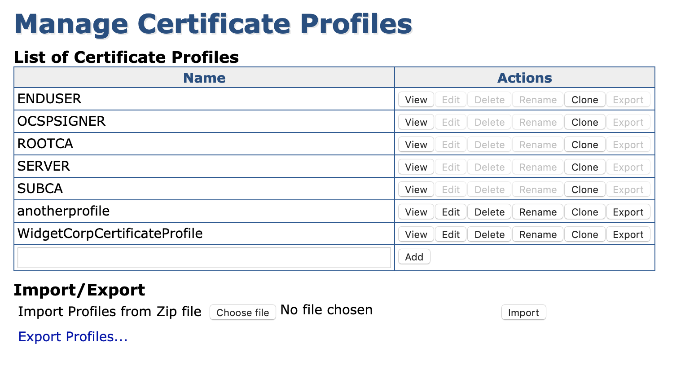

Managing Certificate Profiles
A Certificate Profile defines the constraints of the certificate, for example, what keys it can use, and what the extensions will be.
This section describes how to use the Manage Certificate Profiles page to create and edit Certificate Profiles and includes instructions for creating a Certificate Profile.
For more information about the concepts of Certificate Profiles, see the Certificate Profiles Overview and for information on available Certificate Profiles Fields, see Certificate Profile Fields.
Managing Certificate Profiles
To view the Manage Certificate Profiles page, select Certificate Profiles under CA Functions. The Manage Certificate Profiles page shows a list of available profiles. At the top of the list, you will see a number of default profiles, followed by any new profiles created.

The actions that can be performed on a single profile are:
|
Action Name |
Description |
|
View |
Renders a view-only page of an end entity profile, to be used to ensure that no changes are made unintentionally, or for roles that lack edit access. |
|
Edit |
Allows editing of a certificate profile. Not available for the fixed basic profiles. |
|
Delete |
Deletes a profile. Not available for the fixed basic profiles. |
|
Rename |
Renames a profile to the name specified in the Add textbox. Not available for the fixed basic profiles. |
|
Clone |
Produces a hard copy of a profile, again the name will be taken from the Add textbox. |
|
Export |
Exports the selected profile to a zip file. |
To add a new Certificate Profile, specify a name for the profile at the bottom row, and click Add.
For step-by-step instructions on how to create a Certificate Profile either by adding a new one or cloning a default profile, see Create Certificate Profile.
Importing and Exporting Certificate Profiles
The Import/Export section contains fields for importing and exporting Certificate Profiles. For more information, see Import/Export Certificate Profiles.